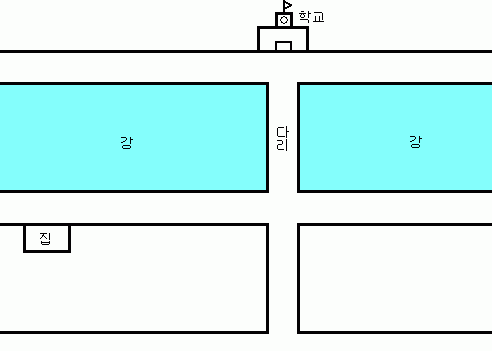

[초등학교 5학년 탐구생활 마지막 문제]
내가 대학교 다닐때의 일이다.
당시 초등학교 5학년이던 사촌 여동생이 방학숙제로 나온 '탐구생활' 을 들고와서 나에게 물었다.
바로 위 그림이 그 문제다.
"철수의 집은 학교와 강 건너편에 있다. 철수의 집에서 학교까지 직선 거리가 몇 걸음인지 구하는 방법을 설명하시오."
물론 원래 문제는 좀 더 초등학생적 용어와 어투였을 것이다.
초등학교 5학년은 이 문제를 어떻게 풀 수 있을까?
(아래쪽을 드래그 하면 정답 후보 두개가 보입니다)
(아래쪽을 드래그 하면 정답 후보 두개가 보입니다)
[정답후보1]
수 많은 정답이 있겠지만 그 중 한가지는 '그림을 그려서 자로 잰다' 입니다.
집-다리, 다리-학교 사이의 거리는 직접 걸어가면서 걸음거리를 잽니다.
하지만 이 방법은 자칫 잘못하면 비례식으로 풀게 됩니다.
수 많은 정답이 있겠지만 그 중 한가지는 '그림을 그려서 자로 잰다' 입니다.
집-다리, 다리-학교 사이의 거리는 직접 걸어가면서 걸음거리를 잽니다.
하지만 이 방법은 자칫 잘못하면 비례식으로 풀게 됩니다.
[정답후보2]
집-다리, 다리-학교 사이의 거리를 직접 걸어가면서 재고 다리에서 학교 반대방향으로 다리-학교 만큼 걸어간 다음 똑바로 집까지 걸어오면서 걸음거리를 잽니다.
하지만 이 방법은 집 근처에 장애물이 없어야 가능합니다.
집-다리, 다리-학교 사이의 거리를 직접 걸어가면서 재고 다리에서 학교 반대방향으로 다리-학교 만큼 걸어간 다음 똑바로 집까지 걸어오면서 걸음거리를 잽니다.
하지만 이 방법은 집 근처에 장애물이 없어야 가능합니다.
과연 초등학교 5학년은 이 문제를 어떻게 풀까요?